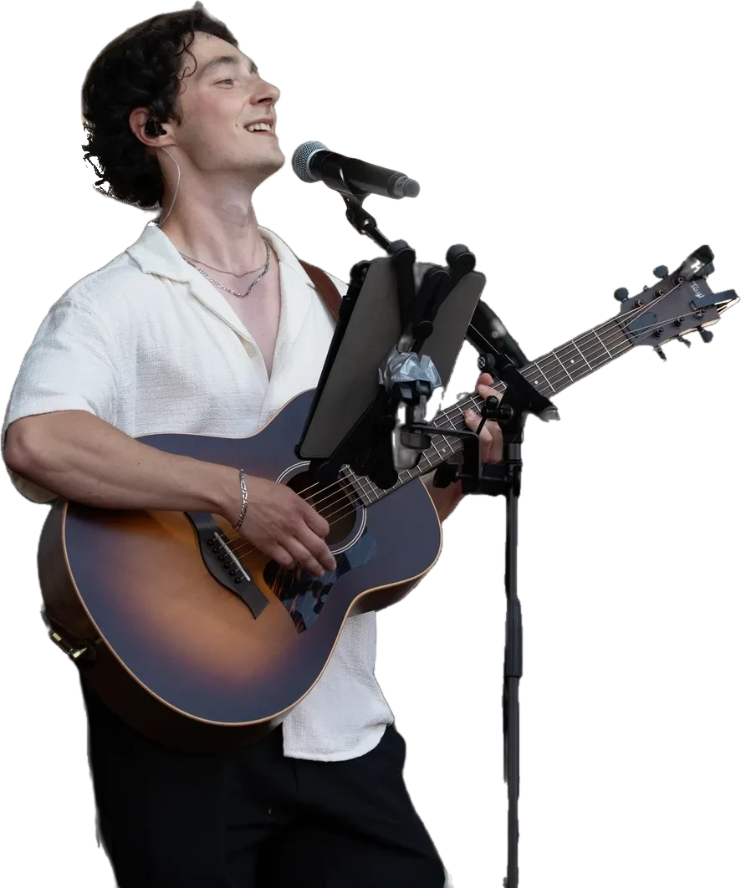

Carl
Chant, guitare acoustique, fondateur
Carl a créé JamBag à ses débuts dans la musique, et ne l'a jamais quitté. Il porte la vision du groupe, construit le répertoire en accord avec chacun et accompagne chaque client du premier appel au dernier morceau. Sensible et créatif, il a le don de créer le lien avec un public, et une ambition simple : que chacun se sente bien, organisateurs, invités comme musiciens. Ses influences vont d'Ed Sheeran à John Mayer, des Red Hot Chili Peppers à Frank Ocean. Il compose également sous le nom YTOS.